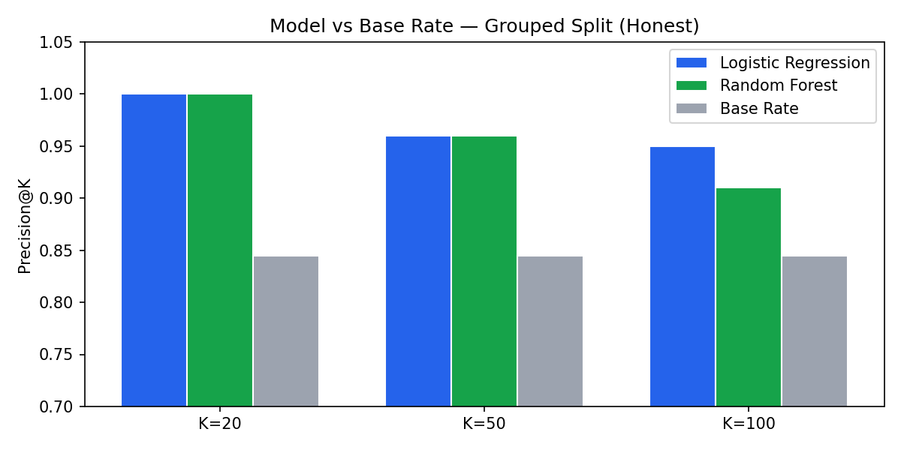
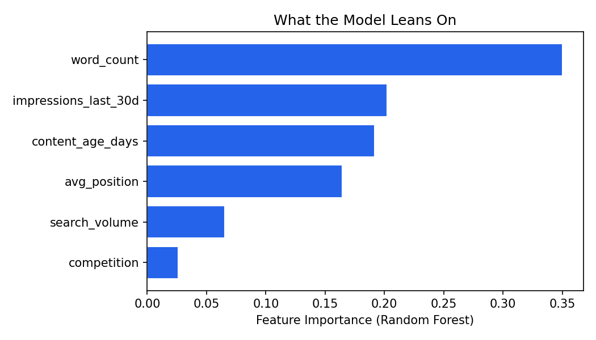
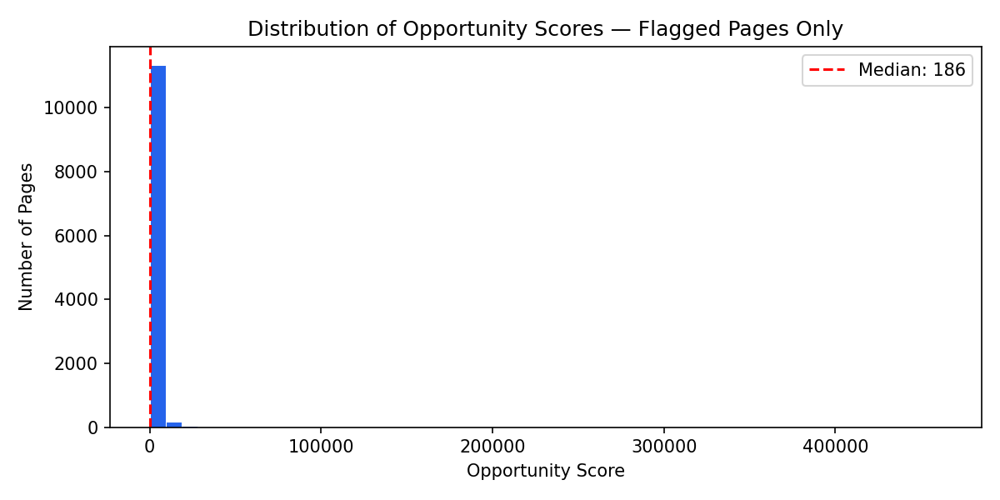

Contents
1. Introduction / Problem
A content team at a mid-sized digital publisher has 30,000 pages indexed in Google Search. Their SEO tool flags anything with a CTR below 5% — which turns out to be most of the portfolio. The team has capacity to review 50 pages per sprint. Which 50?
The flat-threshold approach ignores position context. A page ranking at position 8 with a 4% CTR may be performing above expectation for that position, while a page at position 2 with the same 4% CTR is badly underperforming. A flat rule can't tell these apart — it flags the wrong page and misses the real opportunity.
This work builds a position-aware opportunity score that compares each page's CTR against peers at the same search ranking, weighted by impression volume. The result is a ranked queue where the top entries represent pages where a metadata fix would produce the most additional clicks — not just pages that happen to fall below a fixed number.
2. Data
Source: FlyRank ML Internship starter dataset —
data/raw/content_refresh_anonymized.csv. One row per pseudonymized
content item, 32 clients, trailing-90-day metrics window. No client names, raw
queries, or private URLs appear anywhere in this analysis.
Key columns used
| Column | Description | Notes |
|---|---|---|
| impressions_last_30d | Search impressions, last 30 days | Median: 159, Max: 238,796 — heavy right tail |
| ctr | Click-through rate | Stored as % value: 0.08 = 0.08%, not 8% |
| avg_position | Average search ranking position | 0 means "no data", not rank zero |
| position_tier | Tier label (top_3, page_1, striking, page_3_5, deep) | Used for peer-group comparison |
| word_count | Page word count | 26.7% missing — filled with 0 for modeling |
| content_age_days | Days since publication | Range: 90–564 days |
| competition | Keyword competition level | 0–1 scale |
| search_volume | Monthly search volume estimate | Median: 10 |
Excluded columns and why
- avg_position == 0 — 1,205 rows removed. Zero means no position data, not rank zero per the data dictionary.
- trend_direction, trend_pct — excluded entirely. Both are derived from the label's own computation path — using them as features would create circular leakage confirmed in the Week 6 audit.
- content_id, client_id — pseudonymized IDs used for grouping and splitting only, never as model features.
3. Methodology
Label definition
A page is labeled as an opportunity (1) if its CTR is below the average CTR of other pages in the same position tier. This is a proxy label — it captures pages underperforming relative to peers at the same ranking position, not an independently verified ground truth. Base rate: 82.6% positive across the full dataset.
Baseline rule
A transparent, hand-written score built in Week 4:
low_ctr × high_volume × ctr_gap × impressions. A page only scores above
zero when both conditions are true — CTR below position-tier peer average AND impressions
above the dataset median (159). This rule is readable and explainable, and sets the bar
the model must beat.
low_ctr component
reuses the exact rule that defines the label. Precision@K on the baseline is therefore
circular — it scores perfectly not because the rule is genuinely predictive, but because
it reuses the label's own formula. The model scores are the honest comparison.
Model
Logistic Regression and Random Forest, each trained on 6 features:
impressions_last_30d, avg_position, word_count,
content_age_days, competition, search_volume.
Neither model ever sees ctr or ctr_by_position_avg as input.
Random seed: 42.
Validation design
Grouped split by client_id — all pages from one client go entirely into
train OR test, never split across both. This prevents the model from memorizing
client-specific patterns. Train: 22,024 rows | Test: 6,771 rows | Client overlap: 0
(confirmed).
Leakage checks
trend_directionandtrend_pctconfirmed absent from features- Deliberate leak test run: adding
ctr_by_position_avgdid not cause score to jump toward 1.0 — feature set confirmed clean - Random split vs grouped split gap: 0.08 at K=100 — confirming grouped split is the honest evaluation
4. Results
| K | Baseline p@K | Logistic Regression p@K | Random Forest p@K | Base Rate |
|---|---|---|---|---|
| 20 | 1.00 ⚠️ | 1.00 | 1.00 | 0.845 |
| 50 | 1.00 ⚠️ | 0.96 | 0.96 | 0.845 |
| 100 | 1.00 ⚠️ | 0.95 | 0.91 | 0.845 |
⚠️ Baseline precision@K is circular — see methodology note above. Model scores are the honest comparison.

Both models beat the 0.845 base rate by ~11 points at K=50 on a grouped client split. Logistic Regression and Random Forest perform nearly identically — supporting "simplicity is a feature."

Word count is the strongest driver (0.35), followed by impressions (0.20), content age (0.19), and avg position (0.16). No label-derived features appear — the pattern is explainable and passes the leakage sanity check.

Distribution of opportunity scores across 11,612 flagged pages. Median score: 186. The heavy right tail confirms a small number of high-impression/high-gap pages dominate the top of the queue — start there.
5. Limitations & Honest Framing
- Proxy label, not ground truth. 82.6% of pages are labeled positive — a highly imbalanced label that reflects how the proxy is defined, not a verified measure of "pages that would benefit from a metadata fix."
- 35.2% of pages have fewer than 50 impressions (10,122 of 28,795). CTR estimates are noisy at low volume. The queue already filters these via the high_volume condition, but the label itself is less reliable for these pages.
- 26.7% missing word_count (7,686 of 28,795). Missing values filled with 0 — a more careful approach would add a has_word_count flag feature.
- Single snapshot. One trailing-90-day CSV with no date column. Scores go stale within 4-6 weeks without a data refresh.
- Random split inflated precision@K by 0.08 at K=100 versus the grouped split. The grouped numbers (0.91–0.96) are the ones that belong in any public claim.
- Cross-client peer averages. Position-tier CTR averages are computed across all 32 clients. Pages in lower-CTR industries may appear underperforming simply because the portfolio-wide average doesn't reflect their industry baseline.
6. Ranked Recommendations
11,612 pages flagged for action out of 28,795. Every flagged page carries the low_ctr_high_volume reason code.
Priority 1 — Review title and metadata
low_ctr_high_volume — 11,612 pages. CTR below position-tier peer average AND impressions above dataset median (159). Start with the top 20–50 by score — measure results at 30 days before expanding.
The #1 page has CTR 0.03% vs peer average 2.76%, with 168,958 impressions last 30 days. Even a 0.5% CTR improvement would produce ~800 additional clicks per month from a page Google already shows widely.
Priority 2 — Monitor only
high_volume_only — 2,808 pages. High impressions but CTR is not below peer average. These pages are performing as expected. Watch for CTR drops but don't act yet.
Priority 3 — Deprioritize
low_ctr_only — 12,159 pages. CTR below peers but impressions below median. Fixing CTR on a low-traffic page yields very few additional clicks. Address only after the high-volume queue is cleared.
7. Reproducibility
All notebooks are committed to the repo and can be rerun in Colab with no local setup.
- Week 1: w01_research_question.ipynb — lane framing, initial data exploration
- Week 2: w02_ml_task_framing.ipynb — task type, proxy target, success metric
- Week 3: w03_data_contract.ipynb — warehouse queries, grain checks, availability
- Week 4: w04_baseline_score.ipynb — rule baseline, ranked queue, leakage check
- Week 5: w05_model.ipynb — Logistic Regression + Random Forest, grouped split
- Week 6: w06_validation_audit.ipynb — before/after split, leakage audit, claim rewrite
- Week 7: w07_action_playbook.ipynb — ranked queue, no-go list, monitoring triggers
- Capstone: capstone.ipynb — full paper mirror, figure generation
Random seed: 42 (all models). Key library versions: scikit-learn, pandas, numpy, matplotlib (standard Colab versions, September 2026).
8. Acknowledgments & Data Credit
Built on the FlyRank ML Internship dataset — pseudonymized real production search data from Google Search Console and Google Analytics 4, provided for educational use through the FlyRank ML Internship program.
Data source and internship program: https://flyrank.ai
The starter dataset (30,000 rows) lives at
data/raw/content_refresh_anonymized.csv in the repo.
The full warehouse release (~79M rows) is hosted at
FlyRank/internship-warehouse on Hugging Face
(gated, instant approval).